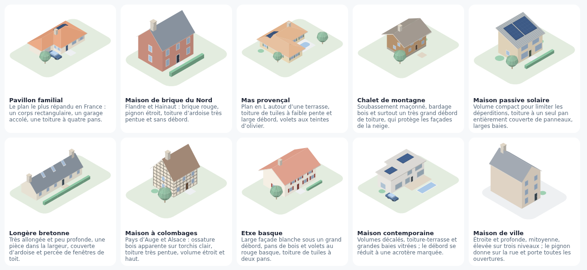
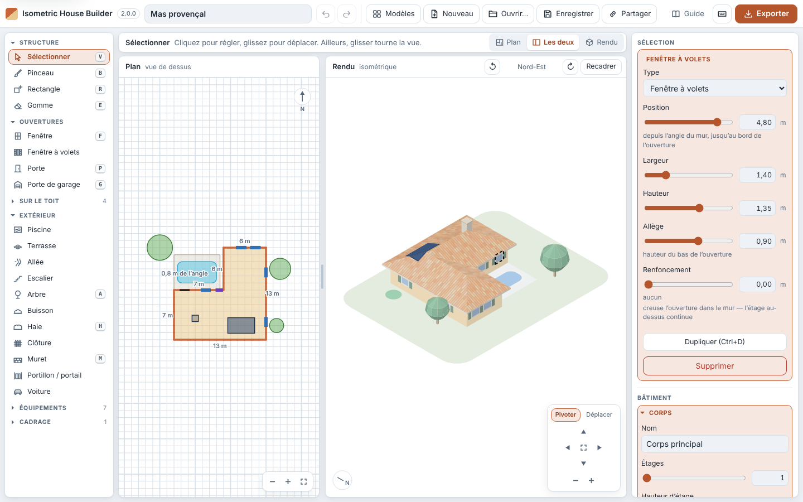
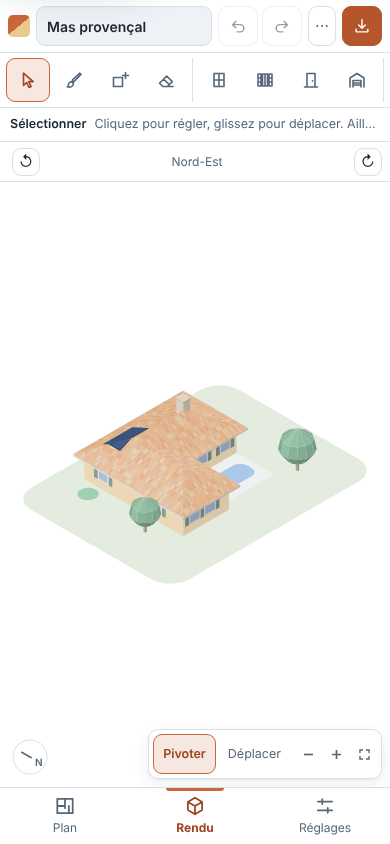
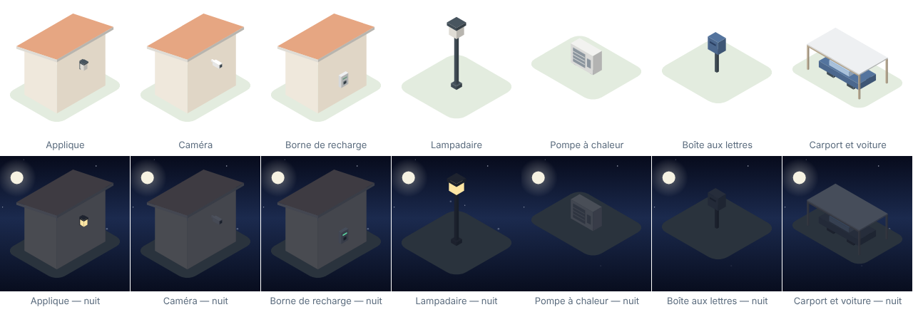
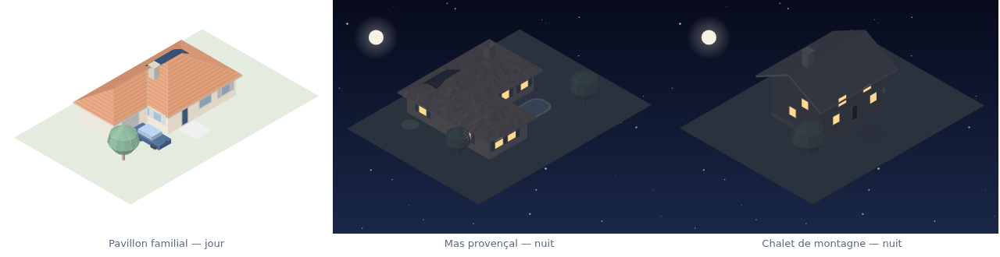
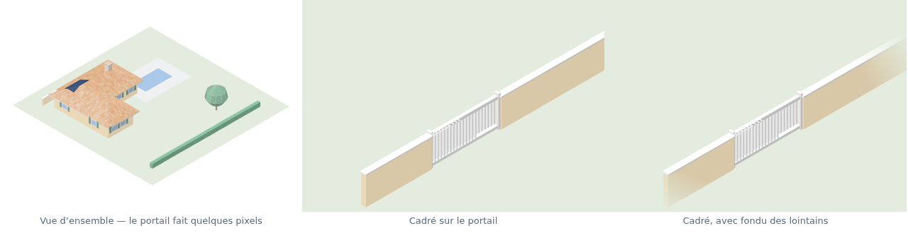

Getting started
Draw your house in isometric view and turn it into an image for a home-automation dashboard. Everything happens in your browser: nothing is sent anywhere, and there is no account to create.
- Start from a template
- The three columns
- Draw the footprint
- Set up the roof
- Windows, doors, roof items
- Several building volumes
- Outdoors: garden wall, gate, pool, steps
- Equipment, for the dashboard
- Colours and materials
- Looking at your house
- Framing an area, for a widget
- Exporting, and adding it to Gladys
- Saving, sharing, privacy
- Shortcuts
1. Start from a template
The tool opens on a gallery of ten houses rather than on an empty grid. Pick the one closest to yours and reshape it: it is quicker than starting from nothing, and nothing in it is final. The Templates button reopens the gallery at any time, and Blank page is always there too.

2. The three columns

- On the left, create. The tools that add something, each with its icon, grouped in families that fold away. Three start folded — On the roof, Equipment and Framing — because you place those once and rarely come back to them. The most common tools have a key, shown next to their name; a tool’s tooltip gives its full help.
- In the middle, draw and look. The plan to build, the render to judge and export. Above them, a line reminds you what the active tool does, and a switch shows the Plan alone, Both or the Render alone (keys 1 2 3). Between the two drawings, a divider can be dragged to give more room to one or the other (double-click: back to the default split). These choices are remembered for your next visit.
- On the right, adjust, in four families: Selection (what you have just clicked), Building, Project, View and export. Each section folds away, shows what it holds while it is closed, and stays open or closed from one visit to the next.
The language selector in the header switches the interface between French and English; your project is not affected.
To the centimetre. Every size or position slider comes
with a field: type 3.40 (or 3,40) then
Enter, and it is 3.40 m — within the slider’s range. The
↑ ↓ arrows in the field adjust it by one step, and
Esc brings back the previous value.
On tablets and phones. Up to 1100 px wide, the tools shrink to icons and the settings stay beside the drawings. On a phone, the tool becomes an app: a compact bar (the ⋯ button gathers Templates, New, Open…, Save, Share and the Guide), a scrolling strip of tools, and three tabs at the bottom — Plan, Render, Settings. A dot on the Settings tab tells you that an item is selected.

3. Draw the footprint
- Rectangle tool: drag on the plan to lay down a volume. Its dimensions show as you draw.
- Brush tool to add square by square, Eraser to remove. Alt reverses the tool. A quick stroke skips no square, and a whole stroke is undone with a single Ctrl+Z. A square that belongs to another volume is left out, and the tool says so.
- Esc during a gesture — rectangle, garden wall, framing, moving, resizing — cancels it without changing anything.
- Each stretch of wall shows its length: that is how you match the real dimensions without counting squares.
Moving around the plan
The plan only moves when you ask it to: it fits itself to the house when a project opens, then keeps its scale while you draw. The wheel zooms around the pointer, two fingers pinch or slide, and you move the plan by dragging with Shift, with the middle button, with Space held down, or on an empty spot with the Select tool. The small pad at the bottom right of the plan zooms in, zooms out and fits the view to the whole project. The pointer’s coordinates, in metres, show at the bottom left.
4. Set up the roof
The Roof section, on the right. Four shapes — hip, gable, lean-to, flat — then the pitch, the overhang and the fascia depth. Valleys between two wings are worked out on their own: draw an L-shaped plan and the roof joins up.
The overhang is set in steps of 25 cm, so that the eaves land on the grid.
A gable roof runs its ridge along the long side of the volume. The Ridge list forces it East–west or North–south — for an almost square house, or for gables facing a street that is not on the long side.
5. Windows, doors, roof items
Choose Window, Shuttered window, Door or Garage door, then click along a wall — on the plan or straight on the render. A selected opening can be adjusted (width, height, sill height) and dragged along the walls, round the corners. Before you click, the wall you are aiming at is highlighted and the outline of the opening appears where it will go, with its distance from the corner. The arrow keys slide it by 5 cm (25 cm with Shift).
Position is measured from the corner of the wall to the edge of the opening: 0 puts it right against the corner, and the slider stops at the far end of the stretch of wall. The whole stretch, not the square: a ten-metre front gives ten metres of travel.
The Recess setting sets an opening back into the wall — the French window tucked in, with the storey above carrying on over it. This is real geometry: the back and the reveals of the recess are shaded and hidden correctly from every angle. Once the recess is in place, two settings widen it beyond the opening, Recess sides and Recess head — enough to draw a porch, with the door at the back.
What goes on the roof — solar panels, chimney, roof window, satellite dish — is placed with a click on the footprint in the plan, or on the roof slope itself in the render: the item lands where you clicked. They follow the slope. Off any roof, the outline on the plan turns red and the click is refused. Once selected, their corners can be dragged on the plan to resize them. A roof takes as many as you care to place one by one — the limit, a hundred items and 800 m² of panels and roof windows, only gets in the way of an outsized file.
6. Several building volumes
A garden shed is not a smaller copy of the house: it has its own flat roof and its cladding. Use the + New volume button in Building → All volumes. Each volume has its own height, roof, materials and colours.
Clicking a volume on the plan with the Select tool, or a wall or a roof in the render, makes its volume the active one — handy for moving from one to another.
With the Select tool, drag a volume to move it as a whole, square by square, with its openings, its wall fittings and whatever sits on its roof; the arrow keys shift it by one square. The Duplicate, Turn ¼ and Mirror buttons in the Volume section (and Ctrl+D) do the rest; a lean-to’s slope follows, and a forced ridge turns with the volume. Two volumes never overlap: a gesture that would make them is refused.
7. Outdoors: garden wall, gate, pool, steps
Garden walls, fences and hedges are drawn by dragging, their length showing as you go. A gate placed near a garden wall lines up with it and opens it automatically — there is no link to maintain between the two: move the gate and the wall closes up behind it.
Terraces and pools can be raised, up to 3 m: they then get their sides and stop blending into the ground. On a sloping plot, this is how you put a terrace level with the first floor, with the garage opening underneath — the ground itself stays flat.
The Steps tool comes down from a raised terrace. Place it at the foot of the terrace: it takes its height, turns to face it and lengthens on its own — about 18 cm of rise and 28 cm of going per step. The inspector shows the number of steps and their going, and warns you when the flight gets too steep. It stands against the terrace; it does not cut into it.
The width and depth of outdoor items are set in quarters of a metre, from 0.25 m: a 3 × 4 m terrace therefore lines up exactly with the building it runs along. The Turn a quarter turn button turns a terrace, a path, a pool, a flight of steps — and the direction it rises with it —, a gate, a garden wall, a hedge, a fence or the car, about its centre.
The car has a direction: the Facing list says which way the bonnet points. A tree is Broadleaf or Conifer.
Before you click, the item appears see-through exactly where it will go; the gate shows the garden wall it is about to open, the steps the terrace they lead to. Once selected, an item shows its dimensions and handles: corners and side midpoints for a terrace, a pool or a car, one at each end for a garden wall, a hedge or a fence, the radius for a tree or a shrub. When you move or resize, the edges snap to walls and to other items within 30 cm — a dotted line shows it —, and Alt turns snapping off. The arrow keys shift the selection by 25 cm (1 m with Shift).
8. Equipment, for the dashboard
The Equipment family gathers what a dashboard puts its markers on: wall light, camera and EV charger, which mount on a wall, then lamp post, heat pump, letter box and carport, which stand on the ground.
Wall fittings are placed like openings, with a click on a wall — in the render, at the height you clicked; on the plan, the targeted wall and the mounting point show before you click. They can be adjusted in position and height, slide along their wall when dragged as with the arrow keys — and from one wall to another by dragging them on the plan —, follow their wall when the house changes, and go with their volume when it is moved, turned, duplicated or deleted. Wall lights and lamp posts light up in the night view, like the windows.
The heat pump and the letter box turn to face a side (Fan facing, Slot facing). The carport is adjusted in size and height, with a flat roof or pergola slats, and a car parks underneath.

9. Colours and materials
The Project → Appearance section for the palette, Colours and materials for the rest. Six palettes, roof coverings (tiles, mixed barrel tiles, slates, standing seam) and wall finishes (brick, cladding, stone, half-timbering), then every material can be recoloured one by one.
10. Looking at your house
Drag on the render to turn the house, wherever you grab it. The pad at the bottom right does the same with clicks, and switches between Orbit and Pan — the arrow keys follow that choice, and holding them down repeats the step.
| Gesture | Effect |
|---|---|
| Drag | Turn the house, and raise or lower the camera |
| Drag the selected item | Move it: on the ground, along its wall, or over its roof |
| Shift + drag | Move the view |
| Alt + drag | Tilt the image within its frame |
| Wheel | Zoom around the pointer |
| [ ] | Turn a quarter turn |
An item that is already selected moves when you drag it — the pointer shows it on hover: an outdoor item slides over the ground in quarters of a metre, an opening along its wall without leaving it, a roof item over its roof, a wall fitting along its wall and up and down. Any other drag turns the view. Esc during the drag puts the item back where it was. Clicking a roof selects its volume.
The View section gives the same settings to the degree, and + Save this view keeps an angle and a framing under a name, so you can come back to it and export it again later.
A Night view checkbox in Appearance turns the illustration to night: a starry sky, the moon, and lit windows — which, on a dashboard, tells you whether the house is awake.

Each saved view has three small buttons: Rename, Update with the current view (its angle and framing), and Delete — the message that follows offers Undo to bring it back.
11. Framing an area, for a widget
A widget that controls a single device gains nothing from showing the whole property: the gate ends up a few pixels wide. The Framing area tool (last family, on the left) draws a rectangle on the plan; the export reframes on it. With the same tool, you move the area by dragging it and resize it by its handles.

Worth knowing:
- Whatever lies outside the area is removed, not just left out of shot. In isometric view, a shed at the bottom of the garden projects upwards, right into a tight frame on the gate.
- Whatever crosses the area is cut there; compact items — a tree, a gate — are kept whole or removed depending on whether their centre falls inside.
- A building volume is kept only if it stands within the area. A house whose wall runs along the area only grazes it by a centimetre: it disappears. Extend the area a metre or two over the building to keep it.
- The Margin is air around the drawing, not extra lawn. A metre or two is usually enough.
- Nothing is cut off by the edge of the image: the camera frames the whole drawing. Each area therefore gives a complete illustration, and a house can carry as many framings as there are widgets.
12. Exporting, and adding it to Gladys
- Export, at the top right (or Ctrl+E, or the button at the foot of the Export framing section). The window shows the image exactly as it will be downloaded, in the proportions of the chosen size, on a checkerboard when the background is transparent.
- Size Gladys — 2560 × 1600, format PNG, background Transparent. The background is chosen in this window: transparent, white, light grey, dark or any colour you like; the night view imposes its starry sky. Custom… gives a free width and height, up to 8192 px a side.
- In Gladys: add the house view widget (“Vue de la maison” in Gladys’s French interface), upload the image, then click on it to place your markers linked to devices.
The other outputs: All 4 sides produces the four orientations, Saved views regenerates all your named views in one go — each as a single ZIP archive, which the browser does not block the way it would a burst of downloads —, Copy puts the image on the clipboard and SVG gives editable vector graphics. Nothing forces you to go through the house view widget: a plain Image card does the job, and the export stays an ordinary PNG for Home Assistant, Jeedom or a wiki.
13. Saving, sharing, privacy
Nothing leaves your browser. The tool sends no requests: no account, no server, no analytics. The current project is kept in the local storage of your browser, on your machine. Someone who opens the tool’s link lands on the template gallery and sees nothing of what you have drawn.
- Save (Ctrl+S) produces a
readable
.house.jsonfile that you can keep under version control, and that Open… (Ctrl+O) reads back — you can also drop the file on the window. In Chrome and Edge, Save writes over the same file instead of downloading a new one; Ctrl+Shift+S picks another. Elsewhere, it is a download. - Share copies a link that holds the whole project in its address. Handy for sending a house to someone — and not to be confused with the tool’s own link if you would rather not show yours. Opening such a link replaces the current project, but Undo brings it back — including for a link pasted into the tool while it is already open; the link is then removed from the address bar, so that reloading keeps your changes.
- New starts again from a blank page, after asking; Ctrl+Z brings back the previous project, as it does after choosing a template. If the browser refuses local saving (private browsing, full storage), the tool tells you: remember to Save then.
14. Shortcuts
? or the Keyboard shortcuts button in the header shows this list in the tool. No single-key shortcut acts while you are typing in a field; Ctrl+S, Ctrl+O and Ctrl+E keep working, so that the browser’s own “save page” does not open instead.
| Key | Effect |
|---|---|
| V B R E | Select, Brush, Rectangle, Eraser |
| F P G | Window, Door, Garage door |
| S A H M C | Solar panels, Tree, Hedge, Garden wall, Framing area |
| 1 2 3 | Plan only, both, render only |
| Ctrl+S / Ctrl+O / Ctrl+E | Save, open, export |
| Ctrl+Z / Ctrl+Shift+Z | Undo, redo — in a text field, undoes the typing. Turning or moving the view is not a change: the history ignores it, and the view stays where it is when you undo |
| Ctrl+D | Duplicate the selection — a selected volume is duplicated alongside |
| Arrows | Shift the selection by 25 cm (1 m with Shift); an opening or a wall fitting by 5 cm along its wall; a volume by one square. A field that has the focus keeps its arrows |
| Space + drag | Move the plan |
| Alt while dragging | Turn snapping off (on the plan) |
| Delete | Delete the selected item (a volume is deleted from the inspector) |
| Esc | Cancel the gesture under way, on the plan or the render; otherwise, go back to Select; otherwise, deselect |
| [ ] | Turn a quarter turn |